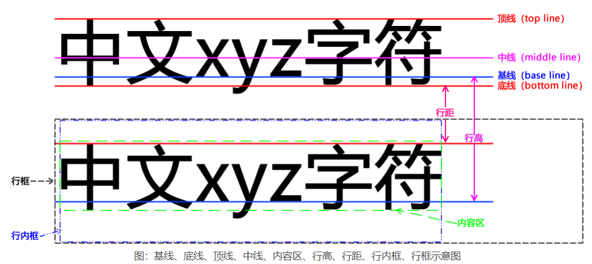

左对齐
右对齐
居中对齐
两端对齐、两端对齐,两端对齐，两端对齐，两端对齐
无装饰文字
带下划线文字
带上划线文字
带贯穿线文字
原文： text-transform 转换后：text-transform
原文： text-transform 转换后：text-transform
原文： TEXT-TRANSFROM 转换后：text-transform
原文： text-transform 转换后：text-transform
text-indent 属性用来为元素中的文本添加首行缩进的效果，至于是从左侧还是从右侧缩进则取决于 direction 属性定义的文本方向。
这是默认的标准行高
这是默认的标准行高
这是默认的标准行高
使用数字定义一个较小的行高
使用数字定义一个较小的行高
使用数字定义一个较小的行高
使用百分比的形式定义一个较大的行高
使用百分比的形式定义一个较大的行高
使用百分比的形式定义一个较大的行高
letter-spacing 属性用来设置字符之间的间距
letter-spacing 属性用来设置字符之间的间距
letter-spacing 属性用来设置字符之间的间距
word-spacing 属性用来设置单词与单词之间的间距，但对中文无效
This is an example of English text
word-spacing 属性用来设置单词与单词之间的间距，但对中文无效
text-shadow 属性可以为文本添加阴影和模糊效果
vertical-align 属性用来定义元素内文本的垂直对齐方式
vertical-align 属性用来定义元素内文本的垂直对齐方式
white-space 属性用来设置如何处理元素内的空白 SSSS white-space 属性用来设置如何处理元素内的空白
direction 属性用来设置文本的方向
direction 属性用来设置文本的方向